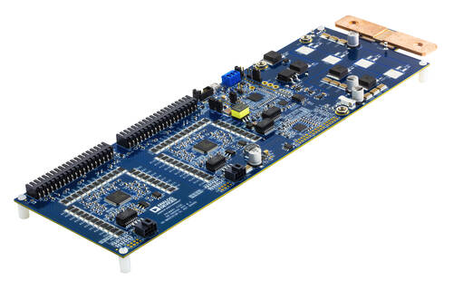
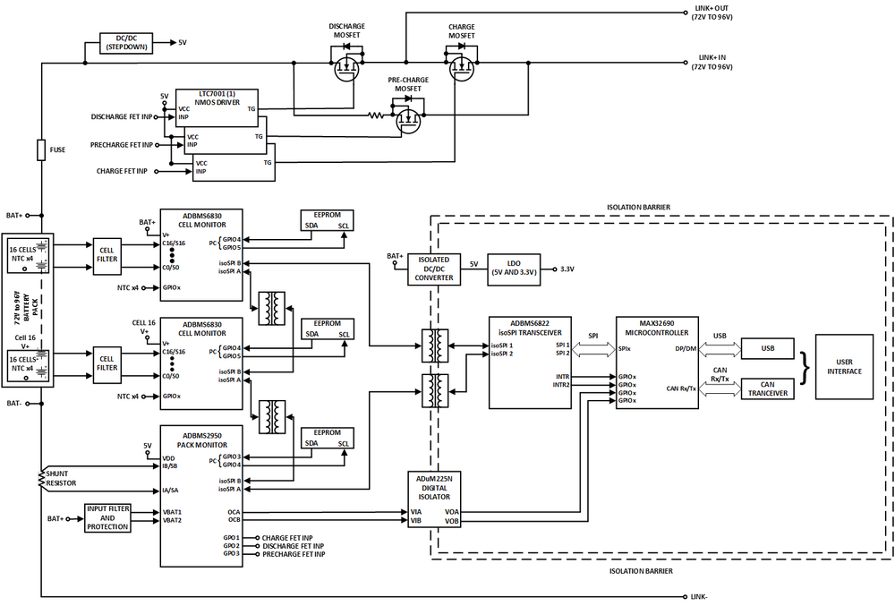
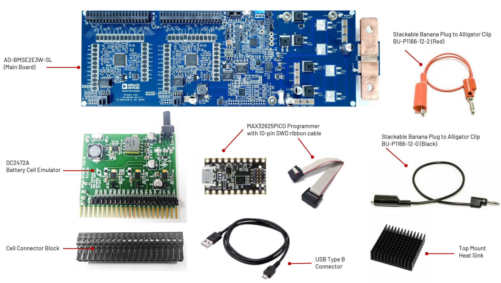
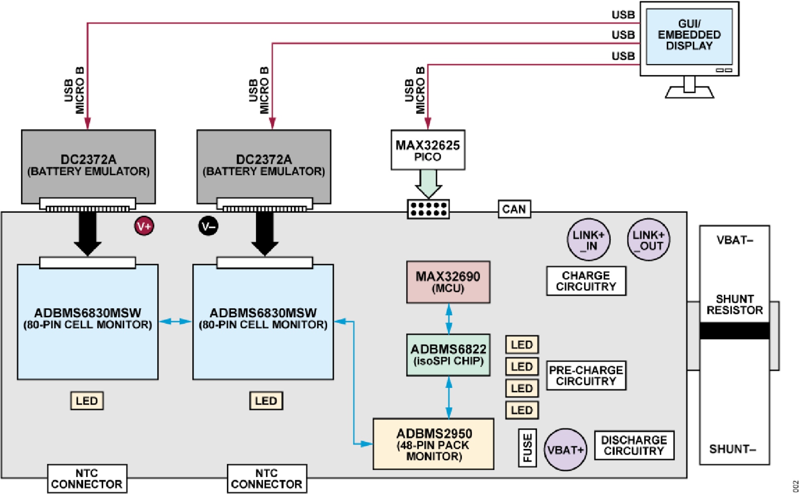

AD-BMSE2E3W-SL User Guide
Overview
The AD-BMSE2E3W-SL is a BMS reference design for light electric vehicles (LEVs). With a voltage range of 72 V to 96 V, this solution is suitable for electric 2-wheeler and 3-wheeler vehicles with high current capacity ranging up to 100 A.
This single-board system utilizes the best-in-class ADBMS6830 cell monitoring chip that is capable of monitoring up to 2x 16-channel. This board also features battery pack monitoring using the ADBMS2950. The ADBMS6822 dual isoSPI transceiver provides a built-in 2-wire reversible isoSPI connection, which simplifies the communication of BMS parts in a daisy chain configuration before sending the data to SPI lines in the microcontroller.
The on-board MAX32690 MCU, when loaded with the firmware, can perform BMS measurements such as cell voltage (average and filtered), and pack voltage and pack current measurement. The board also has a charge, pre-charge, and discharge mode that can be controlled by the ADBMS2950 pack monitor chip.
The AD-BMSE2E3W-SL is designed to perform either in embedded mode or using a GUI, where it calculates the battery’s State of Charge (SoC) and State of Health (SoH) through enhanced coulomb counting technique.
Features
Variable 72 V to 96 V regulated voltage range, suitable for E2W/E3W applications
ASIL-D compliant and automotive grade BMS chip
Built-in charge/pre-charge, and discharge circuitry
1.8 mV total measurement error for cell voltage monitoring
High performance cell/pack voltage and current monitoring
On-board isoSPI communication
Low Power Cell Monitoring (LPCM) capability
GPIO Controllable FET Monitoring
ADBMS6830 GPIO input ready for NTC sensors
Low Power MAX32690 MCU
UART and CAN Communication
SOC and SOH through Enhanced Coulomb Counting Technique
E2W/E3W Basic System Behavior Modes
Embedded Application-ready (via CLI)
GUI capable of the following measurements and fault detection: - Cell Monitoring Voltage and Current - Pack Monitoring Charge Current Monitoring - Discharge Current Monitoring - Temperature Monitoring - Cell OV/UV Detection - Cell/GPIO Open-wire Detection - Cell Balancing
Applications
Electric and hybrid 2-wheeler vehicles
Electric and hybrid 3-wheeler vehicles
Light electric vehicles
System Architecture
Specifications
+=====================================================================================================================================================+ | SYSTEM | +===========================================+===================+=======+=======+=====================================================================+ | Parameter | Min | Typical | Max | Unit | Notes | +===========================================+=======+===========+=======+=======+=====================================================================+ | System Vin+ Supply Voltage from Battery | 60 | | 100 | V | Input voltage supply from battery | +——————————————-+——-+———–+——-+——-+———————————————————————+ | Battery Emulator System Output Voltage | ~66 | | 92 | V | Safe output voltage from Battery Emulator | +——————————————-+——-+———–+——-+——-+———————————————————————+ | Current Discharge | | 50 | 100 | A | Current rating that the BMS can deliver at discharge mode | +——————————————-+——-+———–+——-+——-+———————————————————————+ | Current Charge | 0.3 | 50 | 100 | A | Current rating that the BMS can deliver at pre-charge/charge mode | +——————————————-+——-+———–+——-+——-+———————————————————————+ | Pre-Charge Resistor | | 3×33 | | Ω | | +——————————————-+——-+———–+——-+——-+———————————————————————+ | Charge Voltage Input | | | 100 | V | | +——————————————-+——-+———–+——-+——-+———————————————————————+ | Discharge Voltage Output | | 65 | 92 | V | Regulated voltage range | +——————————————-+——-+———–+——-+——-+———————————————————————+ | FET Discharge Rise Time | | | 42 | mS | | +——————————————-+——-+———–+——-+——-+———————————————————————+ | FET Driver Discharge Input | | | 5 | V | Coming from GPIO of ADBMS2950 | +——————————————-+——-+———–+——-+——-+———————————————————————+ | FET Pre-Charge/Charge Rise Time | | | 88 | mS | | +——————————————-+——-+———–+——-+——-+———————————————————————+ | FET Driver Pre-Charge/Charge Input | | | 5 | V | Coming from GPIO of ADBMS2950 | +——————————————-+——-+———–+——-+——-+———————————————————————+ | FET V(gs) range | | -20 | 20 | V | Coming from GPIO of ADBMS2950 | +——————————————-+——-+———–+——-+——-+———————————————————————+ | FET Rds(on) range | | | 4.8 | mΩ | Coming from GPIO of ADBMS2950 | +—————————————————————————————————————————————————–+ | ADBMS6830 Cell Monitor | +—————————————————————————————————————————————————–+ | Total Supply Voltage, V+ to V− | -0.3 | | 85 | V | | +——————————————-+——-+———–+——-+——-+———————————————————————+ | VREG Supply | 4.5 | 5 | 5.5 | V | +——————————————-+——-+———–+——-+——-+———————————————————————+ | VREF1, VREF2 | 3.0 | | 3.3 | Supply to internal ADCs | +——————————————-+——-+———–+——-+——-+———————————————————————+ VRES/VDD 4.5 5 5.5 V +——————————————-+——-+———–+——-+——-+———————————————————————+ Temp -40 125 °C +——————————————-+——-+———–+——-+——-+———————————————————————+ CPIN Input Range -2.5 5.5 V +——————————————-+——-+———–+——-+——-+———————————————————————+ Cell Count 17 32 Min of 17 cells for the system to initiate daisy chain +——————————————-+——-+———–+——-+——-+———————————————————————+ Drive -0.3 7 V Drive voltage range with respect to each cell monitoring V- +——————————————-+——-+———–+——-+——-+———————————————————————+ ADBMS2950 Pack Monitor +——————————————-+——-+———–+——-+——-+———————————————————————+ Main Supply Voltage In 14 V +——————————————-+——-+———–+——-+——-+———————————————————————+ VREG Pack Monitor 4.5 5 5.5 V +——————————————-+——-+———–+——-+——-+———————————————————————+ Current Input S1A, I1A, I1B -4 4 V +——————————————-+——-+———–+——-+——-+———————————————————————+ Current Input S1A, I1A, I1B -4 4 V +——————————————-+——-+———–+——-+——-+———————————————————————+ Current Input S2A, I2A, I2B -4 4 V +——————————————-+——-+———–+——-+——-+———————————————————————+ Current Input I3A, I3B -4 4 V +——————————————-+——-+———–+——-+——-+———————————————————————+ MAX32690 Microcontroller +——————————————-+——-+———–+——-+——-+———————————————————————+ MCU Supply Voltage from BMS 3.3 5.5 V +——————————————-+——-+———–+——-+——-+———————————————————————+ MCU IO Supply for 1.8 V 1.6 3.0 V +——————————————-+——-+———–+——-+——-+———————————————————————+ MCU VDD Supply 3.3 5.5 V +——————————————-+——-+———–+——-+——-+———————————————————————+ MCU Supply at 1.2 V 1.1 1.35 V +——————————————-+——-+———–+——-+——-+———————————————————————+ MCU Supply at 1.0 V 0.9 1.2 V +——————————————-+——-+———–+——-+——-+———————————————————————+
What’s Inside the Box?
Upon purchase of the AD-BMSE2E3W-SL kit, the package comes with the following boards and accessories:
Components and Connections

System Evaluation
Follow the setup shown in the diagram below to get the board up and running. Ensure that the hardware parts and equipment are complete based on list of Equipment Needed. The banana plug cables used in this setup only have a maximum rating of 10A. Cables suitable for higher current rating must be used if the intended application operates at range higher than 10A. Note that the AD-BMSE2E3W-SL board can only accommodate up to 100A.
Equipment Needed
1x AD-BMSE2E3W-SL Board
2x DC2472A Battery Cell Emulator Boards
1x MAX32625PICO Programming Adapter with 10-pin SWD cable (loaded with firmware image)
2x Cell Connector Block (18-cell connector)
2x USB Type A to Micro-B cable
2x Stackable Banana Plug to Alligator Clip Cable (BU-P1166-12-2, Red)
1x Stackable Banana Plug to Alligator Clip Cable (BU-P1166-12-0, Black)
7x Top Mount Heatsink (to be installed for high current applications)
1x Laptop or PC running Windows 10
Warning
This reference design has not undergone compliant testing for EMI/ EMC standards for automotive. It is up for the user to do its qualification as the requirements vary depending on its end application or use cases.
Note
For high current applications requiring greater than 50 A, it is advisable to install a heat sink to protect the pre-charge, charge, and discharge MOSFETs from overheating.
The AD-BMSE2E3W-SL Kit has 7 available HEATSINK PIN-FIN W/TAPE (375424B00034G) easy-to install, adhesive type, aluminum top mount heat sink than can be installed directly on top of the board.
Peel off the protective film from the bottom of each heat sink and firmly press each one on top of the following FETs:
Attach the 5 heat sinks on the top layer of the board (Q4, Q5, Q6, Q7, and Q9),
the remaining 2 heat sinks on the bottom layer of the board (Q3 and Q8).
Hardware Setup
The board utilizes the DC2472A battery emulator as input for cell voltage measurement. The DC2472A allows a cell voltage of 1.4 V (min) to 4.2 V (max). Follow below steps to set up the board for cell measurement:
Screw the two cell connector blocks to the two DC2472A battery emulators. Note that the first two terminals and the last terminal of each DC2472A cell connector must be left hanging (refer to below figure). Make sure to also set the last two terminals’ input to low voltage or equivalent range of roughly 1.4V per cell. .. image:: battery_emulator_pins.png
Connect the DC2472A battery emulators to the ADBMSE2E3W-SL board through the cell connector blocks. Then, connect a micro-USB Type B cable to each DC2472A battery emulator and power the boards by connecting the other end of the cables to the Host PC. .. image:: usb_emulator.png
Set the DC2472A battery emulators to the lowest voltage by fully turning the Cell Voltage Adjustment Potentiometer counterclockwise.
Attach the MAX32625PICO programmer to the AD-BMSE2E3W-SL board using the 10-pin ribbon SWD cable. Power the MAX32625PICO using a micro-USB to USB cable connected to the Host PC. .. image:: max32625_power_usb_pc.png
Connect the alligator clip cable (red) to the VBATTP Pin or the 3rd of Pin 17 header of the DC2472A battery emulator. Then insert the other end of the cable (banana jack plug) to TP16 (VBAT+ terminal) of the AD-BMSE2E3W-SL board. .. image:: connector_supply_vbattp.png
Connect the alligator clip cable (black) to the GND (VBAT-) supply of the DC2472A battery emulator. Then, connect the other end of the cable to the Rsense (top side) of the AD-BMSE2E3W-SL. .. image:: gnd_vbat-_to_gnd_sense.png
Set the DC2472A battery emulators to HIGH voltage or equivalent to 4.1 V per cell by turning the Cell Voltage Adjustment Potentiometer clockwise.
Check the supply for the following test points as described in the diagram and table below. Make sure that the voltage levels are within the specified range. .. image:: quick_test_points.png
Once all steps are completed, you are now ready to use this reference design and run the accompanying software found in the link below: .. note:
The AD-BMSE2E3W-SL comes complete with firmware examples and easy-to-use application GUI. Access the software resources and see the setup procedure in the AD-BMSE2E3W-SL Software User Guide.
Note
By default (upon purchase), the AD-BMSE2E3W-SL board comes with a MAX32625PICO programmer adapter that is loaded with firmware image.
Otherwise, if you are using a new MAX32625PICO programmer (that is not part of the original kit), make sure to flash it first with the correct firmware image before connecting it to the AD-BMSE2E3W-SL board. If you do not know how to load the image, follow the instructions below:
Software Setup
Download the necessary software from the Analog Devices website.
Follow the installation instructions provided in the software user guide.
Warning
Only use the recommended software and hardware to avoid damage to the system.